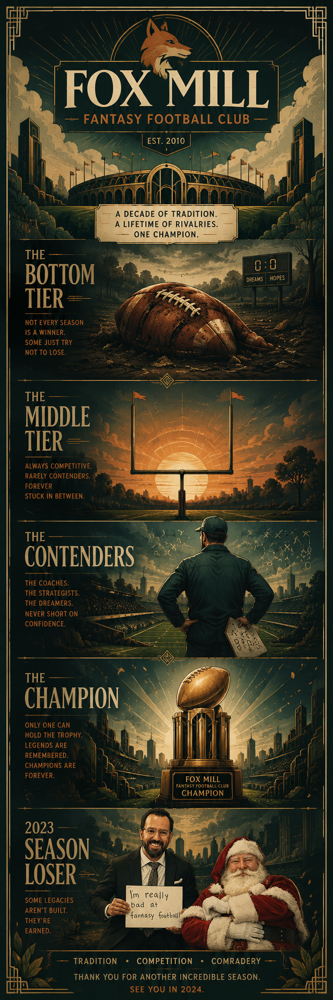

Andrew Williams, Josh Davis, Daniel Bahamonde and Kevin Mallon. The managers history has not been kind to.
John Schauder through Brian Kleinhenz. Managers who remained competitive but never consistently broke through.
Erik Servinsky, Eddie McCumiskey, and Jay Nelson. Always in the conversation. Never far from glory.
Carl Bruce, Blake Pratt, and Greg Wigton. The standard by which all others are measured.